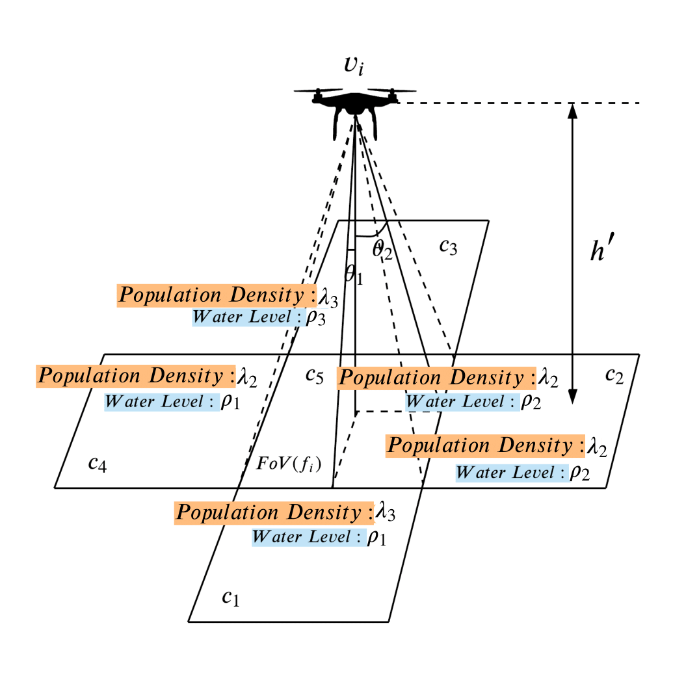
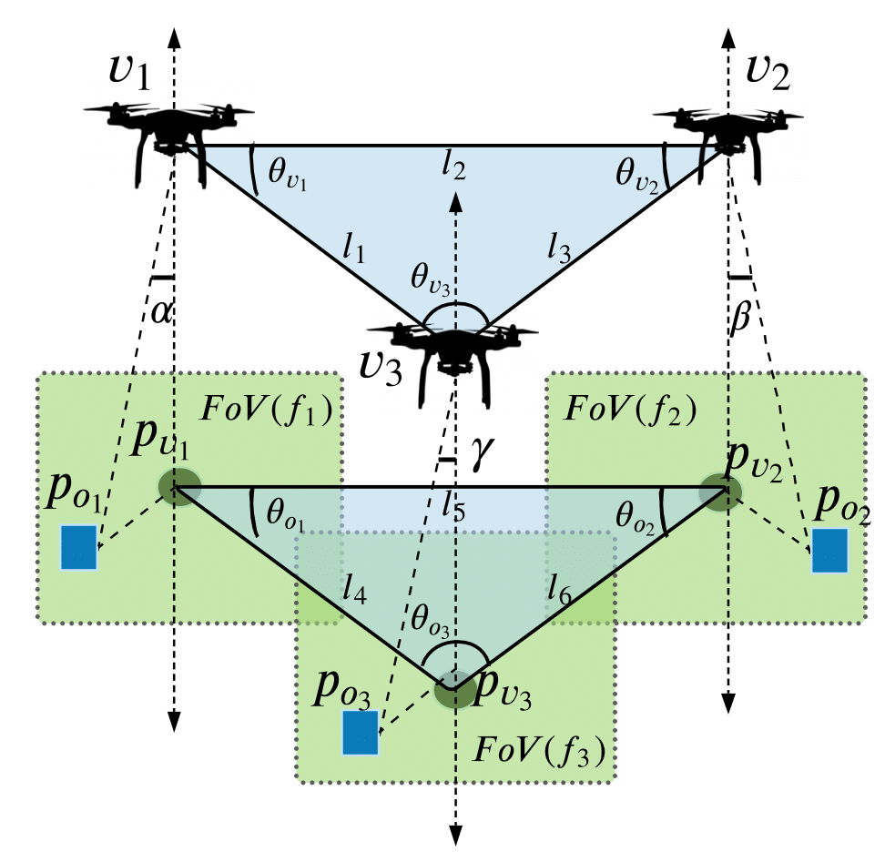

|
News
|
-
28 March 2023Paper titled," Autonomous Flood Area Coverage using Decentralized Multi-UAV System with Directed Explorations", accepted at ALA Workshop - AAMAS 2023
-
6 Nov 2022Paper titled," Addressing Data Intrinsic Characteristics for Augmentation for Breast Cancer Classification", accepted at CODS-COMAD 2023 under Young Researchers’ Symposium track
-
18 July 2022 Completed my thesis proposal seminar
-
24 Aug 2022 Paper "Directed Explorations During Flood Disasters Using Multi-UAV System" accepted in IEEE CASE 2022.
-
Attended Oxford Machine Learning Summer School 2020.
-
Selected as TCS Research Scholar under TCS Research Scholar Program Cycle 16, 2020.
|
|
Publications
|
|
|
Addressing Data Intrinsic Characteristics for Augmentation for Breast Cancer Classification
Armaan Garg
CODS-COMAD '23: Proceedings of the 6th Joint International Conference on Data Science & Management of Data (10th ACM IKDD CODS and 28th COMAD), 2023
abstract |
bibtex
Breast cancer is the most frequently diagnosed cancer among females worldwide. The task of correctly diagnosing cancer using histopathology in its very earlier stages is a challenging and critical task. Most of the present machine learning techniques require a lot of data to analyze and predict a benign tumour in its early stages, and such data is not available readily. In this paper, we propose the idea of data augmentation of breast cancer tissue images by addressing data intrinsic characteristics. The aim is to detect the micro presence of the tumour cells and highlight it over multiple synthetic images for classifiers to predict benign tumours in very early stages with high accuracy. The initial experimental analysis highlights the proposed technique’s impact and significance in boosting the performance of standard classifier(s).
@inproceedings{10.1145/3570991.3571046,
author = {Garg, Armaan},
title = {Addressing Data Intrinsic Characteristics for Augmentation for Breast Cancer Classification},
year = {2023},
isbn = {9781450397971},
publisher = {Association for Computing Machinery},
doi = {10.1145/3570991.3571046},
series = {CODS-COMAD '23} }
|
|

|
Directed Explorations During Flood Disasters Using Multi-UAV System
Armaan Garg, Shashi Shekhar Jha
18th International Conference on Automation Science and Engineering (IEEE CASE), 2022
abstract |
bibtex
The disaster relief operations during floods require time critical information of the flooded area to save lives. Finding critical regions of the disaster struck area in a limited time frame is crucial for effective relief planning. In this paper, we propose a multi-UAV based system with directed explorations of flooded area to gather time-critical ground information using deep reinforcement learning based controls. We learn an exploration policy for the multi-UAV system with limited battery for autonomous coverage of the flooded region. Further, we integrate D8 flow algorithm that approximates the water flow direction based on image pixel information of a sub-region in the UAVs' exploration strategy. The results show that our proposed method for multi-UAV exploration of flooded area outperforms other methods from the literature. Moreover, the learnt multi-UAV exploration policy is able to generalize to unseen flooded regions without any retraining.
@INPROCEEDINGS{9926454,
author={Garg, Armaan and Jha, Shashi Shekhar},
booktitle={2022 IEEE 18th International Conference on Automation Science and Engineering (CASE)},
title={Directed Explorations During Flood Disasters Using Multi-UAV System},
year={2022},
volume={},
number={},
pages={2154-2161},
doi={10.1109/CASE49997.2022.9926454}}
|
|

|
On Learning Multi-UAV Policy for Multi-Object Tracking and Formation Control
Prakarsh Kaushik, Armaan Garg, Shashi Shekhar Jha
IEEE 18th India Council International Conference (INDICON), 2021
abstract |
bibtex
Autonomous navigation and formation control of multi-UAV systems poses a significant challenge for the robotic systems that operate in partially-observable, dynamic and continuous environments. This paper addresses the problem of multi-UAV formation control while cooperatively tracking a set of moving objects. The objective of the multi-UAV system is to maintain the moving objects under their joint coverage along with aligning themselves in an optimal formation for maximizing the overall area coverage. We develop a multi-agent reinforcement learning model to learn a cooperative multi-UAV policy for the multi-object tracking and formation control. We design a reward function to encode the objectives of tracking, formation and collision avoidance into the model. The proposed deep reinforcement learning based model is deployed and tested against a baseline controller using the Gazebo simulator. The result indicates that the proposed model is robust against the tracking and alignment errors outperforming the baseline model.
@INPROCEEDINGS{9691567,
author={Kaushik, Prakarsh and Garg, Armaan and Jha, Shashi Shekhar},
booktitle={2021 IEEE 18th India Council International Conference (INDICON)},
title={On Learning Multi-UAV Policy for Multi-Object Tracking and Formation Control},
year={2021},
volume={},
number={},
pages={1-6},
doi={10.1109/INDICON52576.2021.9691567}}
|
|
|
Classification of Imbalanced Data: Addressing Data Intrinsic Characteristics
Armaan Garg, Vishali Aggarwal, Neeti Taneja
uturistic Trends in Networks and Computing Technologies. FTNCT 2019. Communications in Computer and Information Science, 2020
abstract |
bibtex
Misclassification of skewed datasets is one of the major problems in data mining. In the case of skewness, the number of instances presenting an important class are very short as compared to other classes. Many real world applications suffer from this skewed distribution. Depending on application to application, misclassification of the minority class instances could lead to huge losses. Some of the recent investigations have suggested that there are some issues related to data intrinsic characteristics which heavily affects the performance of the classifier. The major issues are: presence of small disjuncts, lack of density, overlap between classes, presence of noise, borderline instances and the problem of data shift. Through this study, we have discussed an insight into these issues and proposed potential algorithmic solutions that helped us in minimising these problems. For this study we have considered a binary classification model, one being the minority class and other being the majority class. The results induced by the study shows that, this can be use as a basis for future algorithms in addressing the issues of data intrinsic characteristics.
@article{10.1007/978-981-15-4451-4_21,
title={Classification of imbalanced data: Addressing data intrinsic characteristics},
DOI={10.1007/978-981-15-4451-4_21},
journal={Futuristic Trends in Networks and Computing Technologies},
author={Garg, Armaan and Aggarwal, Vishali and Taneja, Neeti},
year={2020},
pages={264–277}}
|
|
Teaching
|
-
Reinforcement Learning (CS533/CS543), Autumn Semester (2022,2021)
Teaching Assistant with Dr Shashi Shekhar Jha
- Artificial Intelligence (CS512), Spring Semester (2022,2021,2020)
Teaching Assistant with Dr Shashi Shekhar Jha
|
|